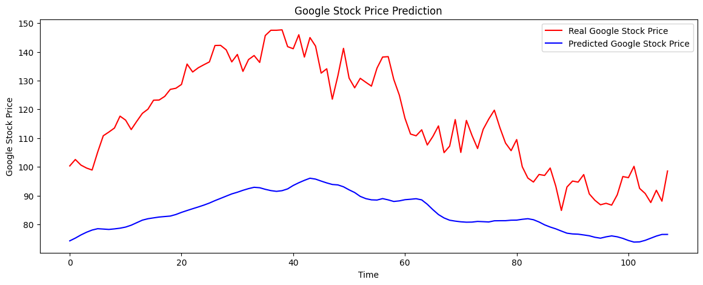

LSTM#
import numpy as np
import matplotlib.pyplot as plt
import pandas as pd
from sklearn.preprocessing import MinMaxScaler
---------------------------------------------------------------------------
ModuleNotFoundError Traceback (most recent call last)
Cell In[1], line 2
1 import numpy as np
----> 2 import matplotlib.pyplot as plt
3 import pandas as pd
4 from sklearn.preprocessing import MinMaxScaler
ModuleNotFoundError: No module named 'matplotlib'
from google.colab import drive
drive.mount("/content/drive")
Drive already mounted at /content/drive; to attempt to forcibly remount, call drive.mount("/content/drive", force_remount=True).
data = pd.read_csv('/content/drive/MyDrive/5293/Stock_Goog.csv', date_parser = True)
data_training = data[data['Date'] < '2021-01-01'].copy()
data_training = data_training.drop(columns = ['Date','Adj Close'], axis = 1)
data_test = data[data['Date'] >= '2021-01-01'].copy()
data_test = data_test.drop(columns = ['Date','Adj Close'], axis = 1)
#Scaling
scaler = MinMaxScaler()
data_training = scaler.fit_transform(data_training)
data_training
array([[0.00000000e+00, 9.96460606e-04, 0.00000000e+00, 2.32515229e-03,
3.13842604e-01],
[3.02678068e-03, 2.21774475e-03, 2.22046735e-03, 1.72004762e-03,
2.57973342e-01],
[1.48663793e-03, 0.00000000e+00, 8.69506051e-04, 0.00000000e+00,
1.77899019e-01],
...,
[9.75129849e-01, 9.72245293e-01, 9.79627474e-01, 9.45460846e-01,
3.53162654e-02],
[9.40373753e-01, 9.44719054e-01, 9.67197699e-01, 9.49869847e-01,
5.84944089e-03],
[9.61923204e-01, 9.69487131e-01, 9.82778799e-01, 9.57197654e-01,
1.00323813e-02]])
x_train = []
y_train = []
for i in range(8, data_training.shape[0]):
x_train.append(data_training[i-8:i])
y_train.append(data_training[i, 0])
x_train,y_train = np.array(x_train), np.array(y_train)
from tensorflow.keras import Sequential
from tensorflow.keras.layers import Dense, LSTM, Dropout
regressor = Sequential()
regressor.add(LSTM(units = 8, activation = 'relu', return_sequences = True, input_shape = (x_train.shape[1], 5)))
regressor.add(Dropout(0.2))
regressor.add(LSTM(units = 8, activation = 'relu', return_sequences = True))
regressor.add(Dropout(0.2))
regressor.add(LSTM(units = 10, activation = 'relu', return_sequences = True))
regressor.add(Dropout(0.2))
regressor.add(LSTM(units = 12, activation = 'relu'))
regressor.add(Dropout(0.2))
regressor.add(Dense(units = 1))
regressor.summary()
Model: "sequential_2"
_________________________________________________________________
Layer (type) Output Shape Param #
=================================================================
lstm_8 (LSTM) (None, 8, 8) 448
dropout_8 (Dropout) (None, 8, 8) 0
lstm_9 (LSTM) (None, 8, 8) 544
dropout_9 (Dropout) (None, 8, 8) 0
lstm_10 (LSTM) (None, 8, 10) 760
dropout_10 (Dropout) (None, 8, 10) 0
lstm_11 (LSTM) (None, 12) 1104
dropout_11 (Dropout) (None, 12) 0
dense_2 (Dense) (None, 1) 13
=================================================================
Total params: 2,869
Trainable params: 2,869
Non-trainable params: 0
_________________________________________________________________
regressor.compile(optimizer='adam', loss = 'mean_squared_error')
regressor.fit(x_train, y_train, epochs=50, batch_size=32)
Epoch 1/50
27/27 [==============================] - 7s 30ms/step - loss: 0.1110
Epoch 2/50
27/27 [==============================] - 1s 27ms/step - loss: 0.0586
Epoch 3/50
27/27 [==============================] - 1s 27ms/step - loss: 0.0283
Epoch 4/50
27/27 [==============================] - 1s 29ms/step - loss: 0.0195
Epoch 5/50
27/27 [==============================] - 1s 27ms/step - loss: 0.0131
Epoch 6/50
27/27 [==============================] - 1s 28ms/step - loss: 0.0120
Epoch 7/50
27/27 [==============================] - 1s 18ms/step - loss: 0.0136
Epoch 8/50
27/27 [==============================] - 1s 19ms/step - loss: 0.0095
Epoch 9/50
27/27 [==============================] - 0s 18ms/step - loss: 0.0095
Epoch 10/50
27/27 [==============================] - 1s 19ms/step - loss: 0.0090
Epoch 11/50
27/27 [==============================] - 0s 18ms/step - loss: 0.0090
Epoch 12/50
27/27 [==============================] - 0s 18ms/step - loss: 0.0082
Epoch 13/50
27/27 [==============================] - 1s 19ms/step - loss: 0.0076
Epoch 14/50
27/27 [==============================] - 1s 19ms/step - loss: 0.0079
Epoch 15/50
27/27 [==============================] - 0s 18ms/step - loss: 0.0080
Epoch 16/50
27/27 [==============================] - 1s 19ms/step - loss: 0.0065
Epoch 17/50
27/27 [==============================] - 0s 18ms/step - loss: 0.0067
Epoch 18/50
27/27 [==============================] - 1s 19ms/step - loss: 0.0065
Epoch 19/50
27/27 [==============================] - 1s 19ms/step - loss: 0.0067
Epoch 20/50
27/27 [==============================] - 1s 20ms/step - loss: 0.0061
Epoch 21/50
27/27 [==============================] - 1s 19ms/step - loss: 0.0063
Epoch 22/50
27/27 [==============================] - 1s 18ms/step - loss: 0.0064
Epoch 23/50
27/27 [==============================] - 0s 18ms/step - loss: 0.0062
Epoch 24/50
27/27 [==============================] - 1s 19ms/step - loss: 0.0059
Epoch 25/50
27/27 [==============================] - 0s 18ms/step - loss: 0.0059
Epoch 26/50
27/27 [==============================] - 1s 24ms/step - loss: 0.0051
Epoch 27/50
27/27 [==============================] - 1s 28ms/step - loss: 0.0063
Epoch 28/50
27/27 [==============================] - 1s 26ms/step - loss: 0.0058
Epoch 29/50
27/27 [==============================] - 1s 27ms/step - loss: 0.0056
Epoch 30/50
27/27 [==============================] - 1s 27ms/step - loss: 0.0058
Epoch 31/50
27/27 [==============================] - 1s 26ms/step - loss: 0.0058
Epoch 32/50
27/27 [==============================] - 1s 27ms/step - loss: 0.0049
Epoch 33/50
27/27 [==============================] - 1s 22ms/step - loss: 0.0058
Epoch 34/50
27/27 [==============================] - 0s 18ms/step - loss: 0.0049
Epoch 35/50
27/27 [==============================] - 1s 19ms/step - loss: 0.0054
Epoch 36/50
27/27 [==============================] - 1s 19ms/step - loss: 0.0040
Epoch 37/50
27/27 [==============================] - 1s 19ms/step - loss: 0.0053
Epoch 38/50
27/27 [==============================] - 1s 19ms/step - loss: 0.0047
Epoch 39/50
27/27 [==============================] - 1s 19ms/step - loss: 0.0047
Epoch 40/50
27/27 [==============================] - 1s 19ms/step - loss: 0.0046
Epoch 41/50
27/27 [==============================] - 1s 19ms/step - loss: 0.0045
Epoch 42/50
27/27 [==============================] - 1s 19ms/step - loss: 0.0044
Epoch 43/50
27/27 [==============================] - 1s 20ms/step - loss: 0.0045
Epoch 44/50
27/27 [==============================] - 1s 19ms/step - loss: 0.0038
Epoch 45/50
27/27 [==============================] - 1s 19ms/step - loss: 0.0043
Epoch 46/50
27/27 [==============================] - 0s 18ms/step - loss: 0.0046
Epoch 47/50
27/27 [==============================] - 0s 18ms/step - loss: 0.0040
Epoch 48/50
27/27 [==============================] - 0s 18ms/step - loss: 0.0046
Epoch 49/50
27/27 [==============================] - 1s 19ms/step - loss: 0.0043
Epoch 50/50
27/27 [==============================] - 1s 19ms/step - loss: 0.0041
<keras.callbacks.History at 0x7f9fbec2cbb0>
inputs = scaler.transform(data_test)
X_test = []
y_test = []
for i in range(8, inputs.shape[0]):
X_test.append(inputs[i-8:i])
y_test.append(inputs[i, 0])
X_test, y_test = np.array(X_test), np.array(y_test)
X_test.shape, y_test.shape
((108, 8, 5), (108,))
#Predicting
y_pred = regressor.predict(X_test)
#scaling scale
scale = 1/scaler.scale_[0]
y_pred = y_pred * scale
y_test = y_test * scale
4/4 [==============================] - 1s 5ms/step
len(y_test)
data_test.shape
(116, 5)
plt.figure(figsize=(14,5))
plt.plot(y_test, color = 'red', label = 'Real Google Stock Price')
plt.plot(y_pred, color = 'blue', label = 'Predicted Google Stock Price')
plt.title('Google Stock Price Prediction')
plt.xlabel('Time')
plt.ylabel('Google Stock Price')
plt.legend()
plt.show()
